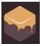
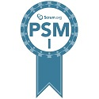
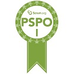
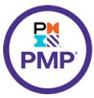
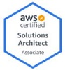
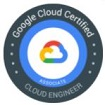
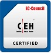
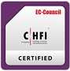

Chen That Choong
I am experienced in leveraging agile frameworks to foster collaborative thinking and culture to deliver complex digital projects that further enhance the overall customer's value proposition to their customers and stakeholders.
Experience
Senior Project Manager --> Program Director
Delivered end-to-end and recovered failing to healthy state for many complex digital projects locally and overseas (Botswana and Bangladesh). Architected and completed complex projects are the crime and criminal records system integrated with various interfaces (such as automated fingerprint identification, national identification, driving licenses, vehicle registration and city-wide video surveillence), national integrated geological information system, tax system, container terminal management system, terrestrial trunk radio-based digital command network, 2006 IMF/World Bank Governors Meeting and Azure cloud infrastructure data center.
On 27th December 2011, the Chitttagong's Container Terminal Management System (2010 -2013) has been inaugurated by the Prime Minister of Bangladesh. On 20th October 2006, the Crime and Criminal Records System has been commissioned by the Police Commissioner of Botswana Police Service.
Bring to the table win-win project delivery, support and operation strategies to ensure proactive customer satisfaction. At the end of the day, going forward, a new normal that has evolved from generation X is on the runway heading towards a streamlined cloud solution.
Data Quality Management Program Manager
Leverage Sun's Six Sigma framework to capitalize on low hanging fruit to identify a ballpark value added activity to improve Asia Pacific(APAC) region support contracts and warranty entitlement's data quality and technical support services.
Achieved reduction of APAC total defects from thousands to less than 200 defects per million opportunities across all levels from sales, support services, finance and logistics units through processes and various systems improvements within 18 months.
Quality Assurance and Configuration Manager
Established a framework for internet-based software development, change management, build and configuration control to production workflow for a internet banking startup company. Perform deep dive into daily software builds and readiness of internet banking functions (such as deposit, loans, forex). Check and conduct various QA rigorous testings are ready for production grade build and deployment.
IT Auditor, Assistant Manager --> Quality Assurance, Assistant Vice President
Deep dive as lead IT auditor and completed inspection of many mission-critical applications (such as cash, deposits, branch automation, consumer property loans, collateral, assets and fund management, ATM, forex, SHIFT/SWIFT, Nominees, futures and options systems. Completed special IT audit assignments to branch office in USA and subsidiary in Malaysia
Established new quality assurance (QA) workflow frameworks and conducted software quality controls testing and code review using QA tools on various application banking systems (such as customer relationship management, property loans, credit cards, ATM, CPF investment, trade finance, forex, fund management and branch teller automation) across different hardware, operating systems, and application platforms.
Served as key technical QA lead with QA team members to develop new Year 2000 date and time common and standard routine for all banking applications to replace in order to ensure a smooth transition of date and time routine when cross over to year 2000.
IT Auditor
Lead IT auditor and completed audit review of mission-critical applications (such as ATM, fixed deposit, hire purchase, retail account payable, poin-of-sales, stock inventory systems).
Systems Analyst
Developed coversion programs to automate conversion of old data format to new format. Analysed, developed and implemented the company accounting system.
Education
University Science Malaysia
Certifications
Summary
| Period | Discipline | Institution |
|---|---|---|
| Apr 2021 | Blockchain Developer Bootcamp | Dapp University, USA(Online Learning) |
| Oct 2020 | Certified Google Professional Cloud Architect | Google Singapore |
| Sep 2020 | Certified Google Associate Cloud Engineer | Google Singapore |
| Jul 2020 | Certified Professional Scrum Master I (PSM1) | Scrum.org |
| Jul 2020 | Certified Professional Scrum Product Owner I (PSPO1) | ,Scrum.org |
| Jun 2020 | AWS Certified Solutions Architect - Associate | AWS Singapore |
| Oct 2017 | Certified Ethical Hacking | EC-Council, Singapore |
| Mar 2017 | Computer Hacking Forensic Investigator | EC-Council, Singapore |
| Mar 2015 | Certified IT Project Manager Senior (CITPM, Senior) | Singapore Computer Society |
| Feb 2011 | Certified IT Business Continuity Management(CITBCM) | Singapore Computer Society |
| Oct 2009 | Certified Outsourcing Management for IT Practioner (COMIT) | Singapore Computer Society |
| Nov 2007 | Certified Project Management Professional (PMP) | Project Management Instituite, USA |
| Jun 2006 | Certified IT Service Management | IT Infrastructure Library (ITIL), USA |
| Feb 2006 | Certified Information System Auditor | Information Systems Audit and Control Association (ISACA), USA |
| Dec 2004 | Certified IT Project Manager (CITPM) | Singapore Computer Society |
| Dec 2004 | Certified Six Sigma Green Belt | Sun Microsystems, USA |
| Nov 2002 | Six Sigma Black Belt Facilitation Skills | Sun Microsystems, USA |
| Nov 1999 | Certified Software Quality Analyst (CSQA) | Quality Assurance Institute, USA |
Portfolio
My Awesome ETH2 Validator/Beacon Node Blockchain Project (on Kovan Testnet) #1
My Awesome Yeild Farming GroovySwap Blockchain Project(Rinkeby Testnet) #2
For a start, one deposit DAI-ETH pair Liquidity Pool is available to earn Groovy token. More deposit crypto-currency pair can be added later... Check it out with this link. 😀
My Awesome PENG Token Exchange Blockchain Project(Kovan Testnet) #3
PENG token is a new token. Check it out with this link. 😀
Skills


- Remote-friendly team workspace for team collaboration
- Cross Functional Teams
- Agile Development & Scrum
Interests
Apart from managing complex digital projects, I enjoy taking time to chill-off by doing indoor or outdoor exercises like yoga, meditation and walking in parks. For casual sports, I enjoy playing badminton, tracking, biking and swimming.
I spend a some amount of my free time exploring the latest technology advancements in the decentralized finance, payment, ecommerce, climate change, communities events and initiatives, and reading articles/news/resources of interests.
Awards & Certifications
      